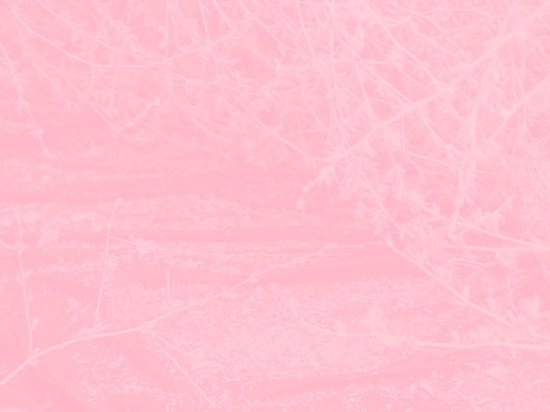
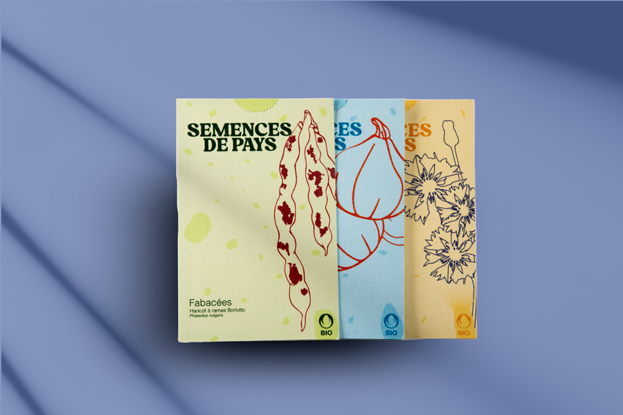
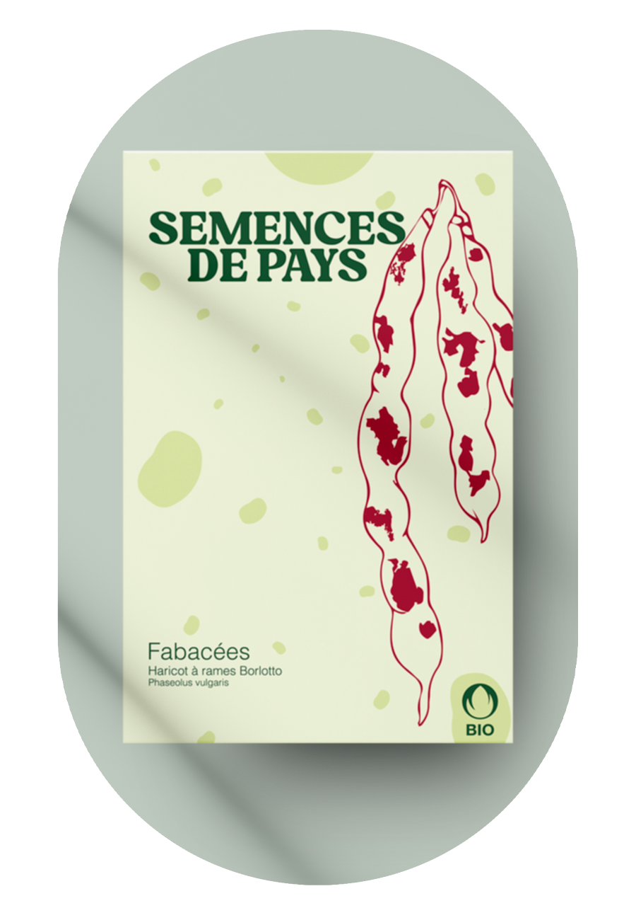
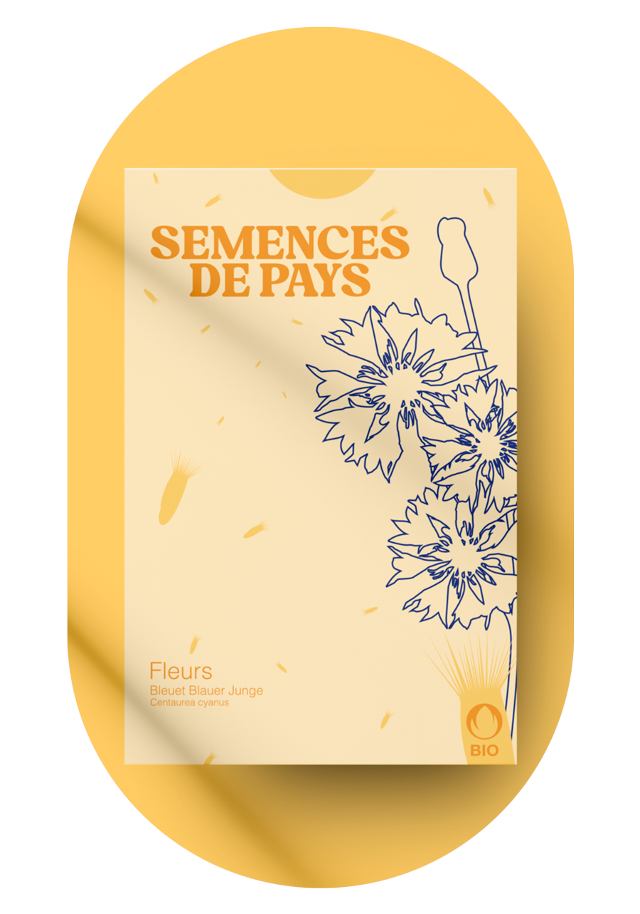
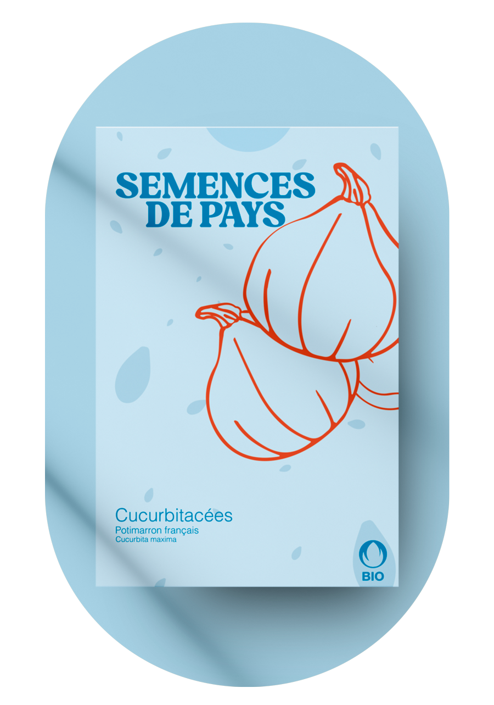

Graines de chicorée Double-blonde, Chêne-Bourg, juillet 2020 © Christian Lutz
Fabacées
Fleurs
Curcubitacées
Découvrez nos trésors de
biodiversité sur le shop!
Semences de pays développe une production de
semences reproductibles,rustiques et adaptées
à une agriculture biologique proche des
cycles de la nature, en collaboration
avec les initiatives nourricières de proximité.
Graines de chicorée Double-blonde, Chêne-Bourg, juillet 2020 © Christian Lutz
Découvrez nos trésors de
biodiversité sur le shop!